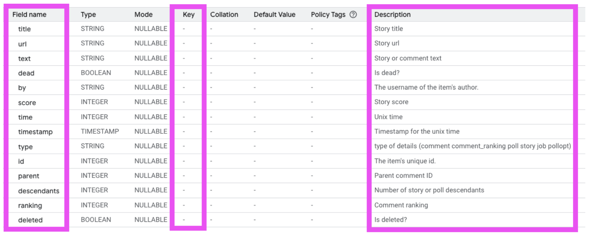
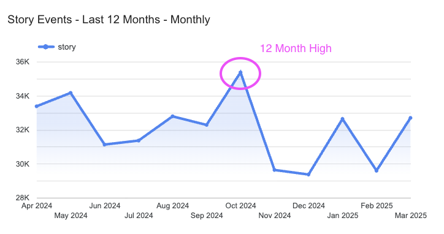
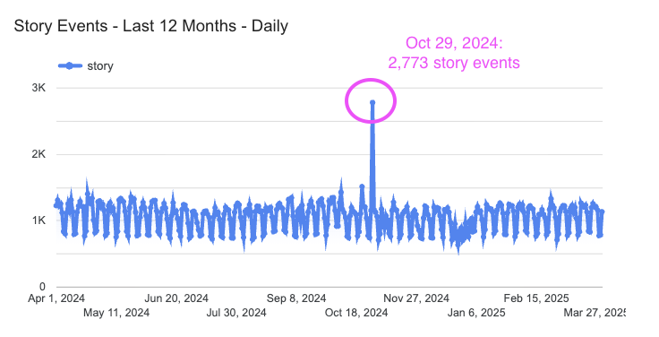
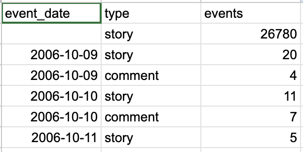
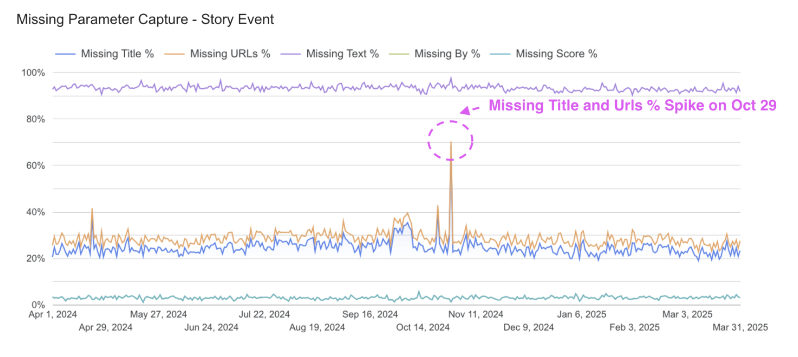
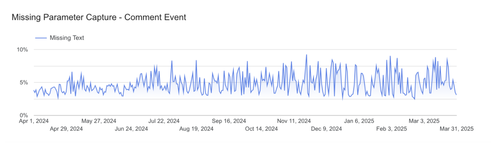
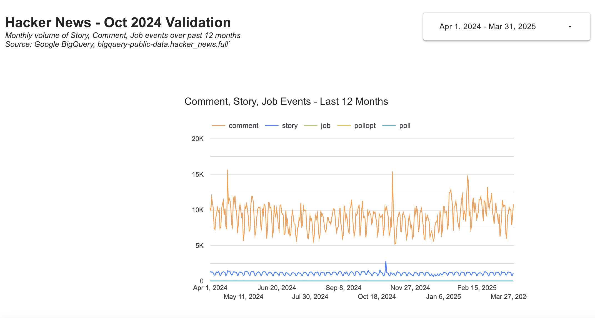

Hacker News is a social news website focusing on computer science and entrepreneurship, run by the investment fund and startup incubator Y Combinator.
The Hacker News engineering team pushed a major backend update on October 1, 2024. The task was to validate that data capture looked normal.
The analysis was completed in April 2025.
The validation process has three stages:
How is the hacker_news.full table organized? Is there a primary key to prevent duplication? Are there partitions to optimize performance?
Do we believe the volume of events (by type: story, comment, etc.) and the dates they occurred are reasonable?
For the priority events, are the necessary event specific parameters to provide color to the analysis coming in? Priority events: Story and Comment.
Takeaways
hacker_news.full, there are also currently no duplicates on "ID", which the schema states is the primary unique identifier.Methodology
First I examined the schema and scanned the table preview.

There is no designated primary key on this table, meaning there is no constraint to enforce unique rows. This is also important to note if we want to join against any other tables.
"Type" and "ID" seem to be the only columns that are always populated. "Type" looks like an event field, which describes the category of user interaction on the site. Given the context that this is a news content site, they make sense to us: comment, comment_ranking, poll, story, job, pollopt. "ID" is the identifier for an item/event. The documentation says it's unique, but it's not set as the primary key so I'd proceed with caution.
Confirmed "Type" and "ID" are populated on all rows — query returned no dataSELECT type, id
FROM `bigquery-public-data.hacker_news.full`
WHERE type IS NULL
OR id IS NULL;SELECT
id,
COUNT(*) AS id_count
FROM `bigquery-public-data.hacker_news.full`
GROUP BY 1
HAVING COUNT(*) > 1
ORDER BY 1 DESC;A query of hacker_news.information_schema.columns also tells me there is no partitioning column. I'm working with 1TB of quota and this would have been ideal to select a subset, such as a particular date range, when I don't need to scan the entire table to save on time and quota.
Takeaways


Methodology
To validate the volume of events by date, I pulled a count of events by type from the Hacker News Full Table. The timestamp field was in UTC; I assumed EST as our relevant time zone.
Event count by type and dateSELECT
FORMAT_DATE('%Y-%m-%d', DATE(timestamp, "America/New_York")) AS event_date
, type
, count(*) as events
FROM `bigquery-public-data.hacker_news.full`
GROUP BY 1,2
ORDER BY 1,2 desc;
Full query results: Hacker Events by Date
Takeaways


Methodology
The approach was to pull the following by date for the past 12 months: story and comment events, and any cases where there are null values on their respective event parameters.
Story event parameter capture by dateSELECT
FORMAT_DATE('%Y-%m-%d', DATE(timestamp, "America/New_York")) AS event_date,
COUNT(*) AS events,
COUNTIF(title IS NULL) AS missing_title,
COUNTIF(url IS NULL) AS missing_url,
COUNTIF(text IS NULL) AS missing_text,
COUNTIF(dead IS NULL) AS missing_dead,
COUNTIF(`by` IS NULL) AS missing_by,
COUNTIF(score IS NULL) AS missing_score
FROM `bigquery-public-data.hacker_news.full`
WHERE type = 'story'
AND DATE(timestamp, "America/New_York") BETWEEN '2024-04-01' AND '2025-03-31'
GROUP BY 1
ORDER BY 1 ASC;Full query results: Story event parameter capture by date
Comment event parameter capture by dateSELECT
FORMAT_DATE('%Y-%m-%d', DATE(timestamp, "America/New_York")) AS event_date,
COUNT(*) AS events,
COUNTIF(text IS NULL) AS missing_text,
COUNTIF(parent IS NULL) AS missing_parent,
COUNTIF(descendants IS NULL) AS missing_descendants,
COUNTIF(ranking IS NULL) AS missing_ranking,
COUNTIF(deleted IS NULL) AS missing_deleted
FROM `bigquery-public-data.hacker_news.full`
WHERE type = 'comment'
AND DATE(timestamp, "America/New_York") BETWEEN '2024-04-01' AND '2025-03-31'
GROUP BY 1
ORDER BY 1 ASC;Full query results: Comment event parameter capture by date
The full validation dashboard is live in Looker Studio, covering missing parameter rates by date for both story and comment events across the trailing 12 months.

View Live DashboardIf I had more time, I would perform live QA in a pre-production environment by manually triggering key user actions (posting a story, commenting) and monitoring the Network tab to observe network calls.
I would inspect payloads to confirm that event data is correctly structured and sent to the 3rd party analytics servers (Google Analytics, Amplitude, Adobe, etc.). If server-side analytics were involved, I would validate event capture in the database by querying relevant event tables to ensure completeness and accuracy.
Ideally, I would test on every release to flag potential regression bugs.
Moving forward, to ensure confidence in the hacker_news.full table, I would set up a series of alerts on the daily ETL process. These alerts would monitor:
Alerts could be delivered via email or an automated Slack message to a monitoring channel. In addition, I would review a daily validation dashboard following each data load to proactively monitor trends.